The Red Hot Chili Peppers come from a long line of punk, funk, and alternative rock bands from the 1970s and 1980s. Reigning from Los Angeles, California, USA the group formed in 1982 and has gone on to be one of the most successful musical acts of all time. Their unique sound which took many years and approximately four albums to develop, has defined them as a generation defying band.
The Chili Peppers are a four piece band each equally bringing a sizable contribution to the band on each and every album. Anthony Keidis is the lead vocalist of the band. From initially starting out as a rock-rapper, over the years he has created a more melodic style of singing. His distinctive lyrics helped the band stand out from others when starting out.
John Frusciante is the band’s guitarist and is regarded as one of the best of all time. With a style coming from legends such as Jimi Hendrix’s, Frusicante has created some of the most memorable riffs of the 90s and early 00s. Some may include guitar parts featured on “Under the Bridge” and “Can’t Stop” on their studio albums Blood Sugar Sex Magik (1991), and By the Way (2002).
Chad Smith is the bands beating heart sitting on the kit. He is a self taught drummer whose parts allow the band to play crazy instrumentals over a steady yet complex beat. Chad Smith was awarded just last year, best rock drummer of the year by popular drum magazine Modern Drummer. Demonstrating how his talent even now at 62 years old can be carried on with the RHCP. Some of his most notable parts include the opening on “Dani California” from their 2006 album “Stadium Arcadium” or “Don’t Forget Me” on “By the Way”.
Finally, there is their bassist Micheal Balzary better known by his stage name Flea. By far the most iconic member of their band for his energetic stage presence and interesting style choice. Flea’s bass parts make any RHCP song fun for a bass player. The parts are difficult and require immense finger strength and practice but sound amazing when played with the rest of the band. Famous parts include “By the Way” on "By the Way" and “Around the World” from “Californication”.
The Chili Peppers have produced 13 studio albums over the course of 40 years. They still to this day tour the world at 60 years of age performing timeless songs off of these masterpieces.
| Date and Name | Album Cover |
|---|---|
The Red Hot Chili Peppers - 1984 |
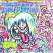 |
Freaky Style - 1985 |
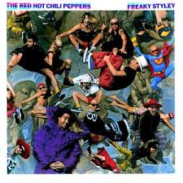 |
The Uplift Mofo Party Plan - 1987 |
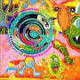 |
Mother's Milk - 1989 |
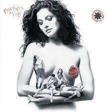 |
Blood Sugar Sex Magik - 1991 |
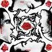 |
One Hot Minute - 1995 |
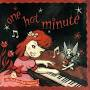 |
Californication - 1999 |
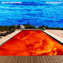 |
By the Way - 2002 |
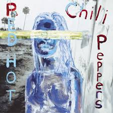 |
Stadium Arcadium - 2006 |
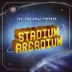 |
Im With You - 2011 |
|
The Getaway - 2016 |
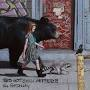 |
Unlimited Love - 2022 |
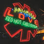 |
Return of the Dream Canteen - 2022 |
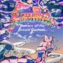 |